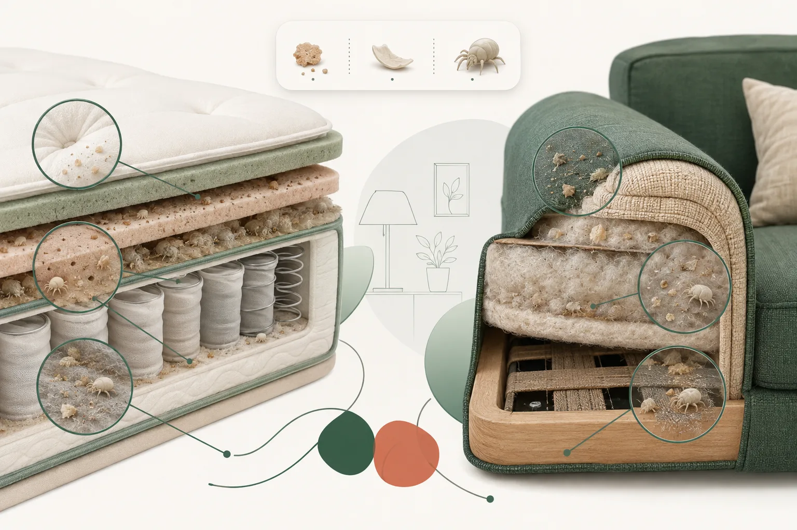
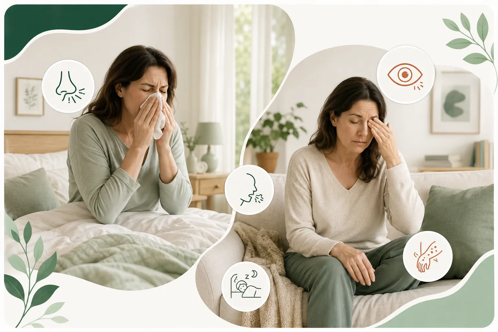
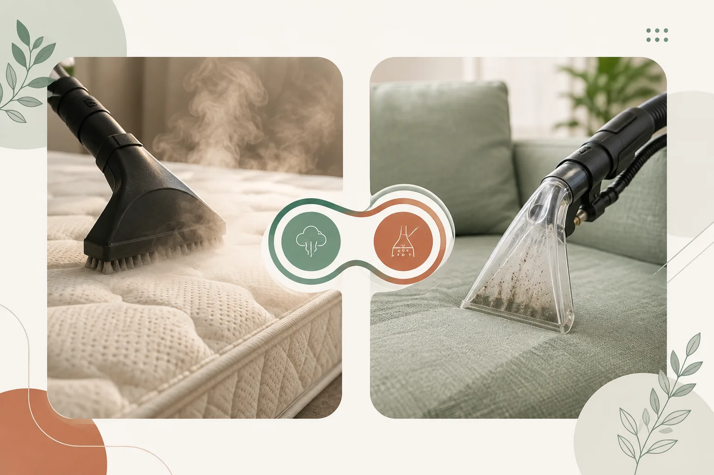

Vous éternuez au réveil. Votre nez est bouché sans être malade. Vos yeux piquent le soir sur le canapé, mais plus une fois dehors. Ce n'est peut-être pas un rhume qui traîne — c'est peut-être votre matelas, ou votre canapé.
En Suisse, environ 6% de la population souffre d'une allergie aux acariens de la poussière domestique, selon aha! Centre d'Allergie Suisse. Et la moitié des personnes concernées ne savent même pas qu'elles le sont — elles pensent juste qu'elles sont « souvent enrhumées ».
C'est quoi, un acarien, exactement ?
Un acarien, c'est un cousin microscopique de l'araignée. Invisible à l'œil nu — entre 0,1 et 0,5 mm. Il ne pique pas, ne mord pas, ne transmet aucune maladie. Le problème, ce ne sont pas les acariens eux-mêmes : ce sont leurs déjections. Un acarien produit en moyenne plus de 20 crottes par jour, et ce sont les protéines qu'elles contiennent qui déclenchent les réactions allergiques.
Ils adorent un environnement précis : chaud (20-25°C), humide (65-80%), et riche en cellules de peau morte — exactement les conditions d'un lit ou d'un canapé après une nuit ou une soirée passée dessus. Un matelas peut héberger plus de 2 millions d'acariens. Ce n'est pas une question de propreté ou d'hygiène : on en trouve dans tous les logements, même les plus soignés.

Les signes qui ne trompent pas
Comme on ne peut pas voir les acariens, c'est le corps qui parle en premier. Les signes les plus fréquents, surtout au réveil ou après un moment prolongé sur le canapé :
- Éternuements répétés, nez bouché ou qui coule
- Yeux qui piquent ou qui grattent
- Toux sèche, irritation de la gorge
- Fatigue au réveil, sommeil qui semble jamais vraiment réparateur
- Démangeaisons, plaques rouges ou eczéma sur la peau
- Symptômes qui s'aggravent en automne et en hiver, quand on aère moins et qu'on chauffe plus
Si ces signes disparaissent quand vous partez en vacances ou en altitude, c'est souvent un bon indice : l'air y est plus sec et froid, moins favorable aux acariens.

Et sur le matelas ou le canapé lui-même ?
On ne verra jamais un acarien à l'œil nu, mais certains signes sur le tissu lui-même doivent alerter :
- Une odeur légère de moisi ou de renfermé, même après aération
- Une accumulation de poussière fine dans les coutures, malgré l'aspirateur
- Une texture qui semble légèrement granuleuse au toucher
- Des taches sombres diffuses, notamment sur un matelas jamais retourné
Aucun de ces signes ne prouve une infestation à 100% — mais combinés à des symptômes allergiques, ils forment un faisceau d'indices assez clair.
Ce qui marche vraiment (et ce qui ne sert à rien)
L'Office fédéral de la santé publique (OFSP) est clair sur un point : les sprays et produits « anti-acariens » ne sont pas recommandés, faute de preuve d'efficacité suffisante. Ce qui fonctionne réellement, selon aha! Centre d'Allergie Suisse et le CHUV :
- Housses anti-acariens (encasings) sur matelas, oreiller et couette — la mesure la plus efficace, car c'est dans le lit que l'exposition est la plus forte
- Lavage de la literie à 60°C, une fois par semaine
- Aspirateur à filtre HEPA, y compris sur le matelas et le canapé
- Aération quotidienne, matin et soir, même en hiver
- Éviter la surchauffe — un intérieur trop chaud favorise leur prolifération
À cela s'ajoute un geste que peu de gens pensent à faire : un nettoyage en profondeur du matelas et du canapé, par injection-extraction, avec une étape complémentaire à la vapeur.

Ces deux techniques ne font pas la même chose, et c'est important de le comprendre :
- La vapeur haute température (100°C et plus) tue les acariens vivants au contact — leur seuil de survie se situe autour de 55-60°C.
- Mais tuer un acarien ne le fait pas disparaître. Ses déjections et son corps restent dans le tissu si on ne les retire pas — et ce sont justement ces résidus, vivants ou morts, qui déclenchent l'allergie.
- C'est l'injection-extraction qui fait ce travail-là : elle aspire physiquement la poussière, les squames de peau et les résidus accumulés dans les fibres, là où l'aspirateur classique ne va pas.
Autrement dit, la vapeur seule ou l'aspirateur seul ne suffisent pas vraiment. C'est la combinaison des deux qui a un sens : la chaleur réduit la population vivante, puis l'extraction retire ce qui reste. Ce n'est ni un traitement médical ni une stérilisation au sens strict, et ça ne remplace pas les mesures ci-dessus si vous êtes diagnostiqué allergique. Mais couplé aux housses et au lavage régulier, c'est un vrai geste d'entretien en profondeur — surtout pour deux objets qu'on ne peut, de toute façon, jamais passer en machine.
Un nettoyage en profondeur pour votre matelas et votre canapé
Happy Move intervient à domicile, partout à Genève, avec un devis confirmé sous 24h.
Un doute ? Deux choses à faire
Si les symptômes persistent ou s'aggravent, la première étape reste un test chez un allergologue — c'est le seul moyen de confirmer une allergie aux acariens plutôt qu'un simple rhume chronique.
Pour l'entretien en profondeur de votre matelas ou de votre canapé, Happy Move intervient à domicile, partout à Genève, avec un devis confirmé sous 24h.
Sources : aha! Centre d'Allergie Suisse, Office fédéral de la santé publique (OFSP), CHUV.